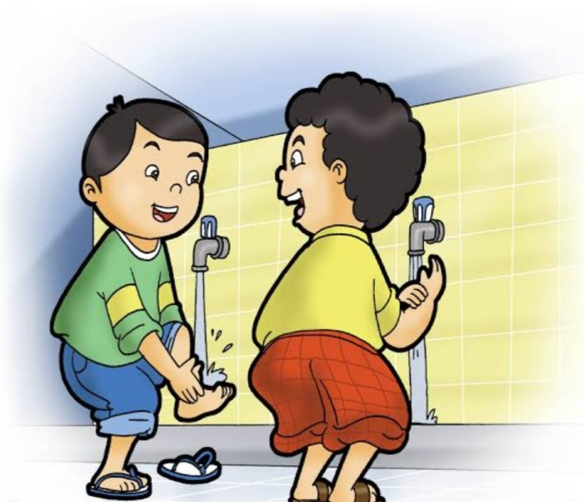
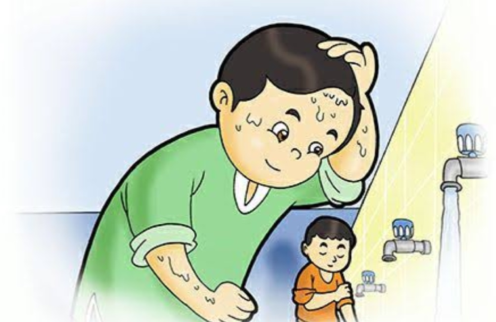
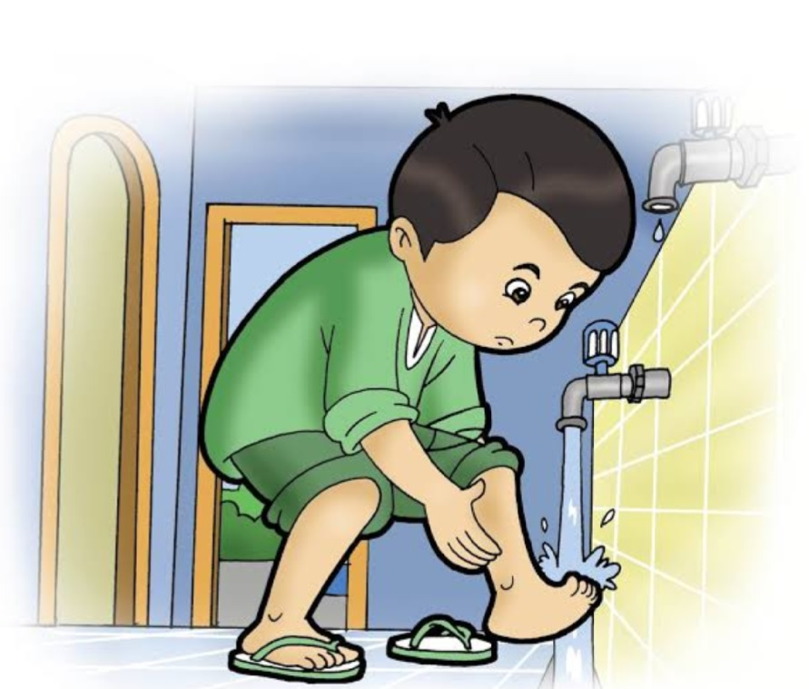
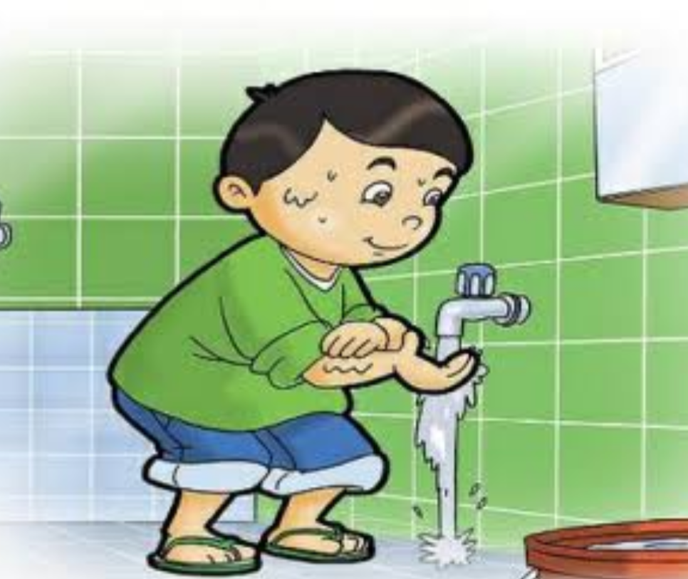

Wudhu
Pengertian Wudhu
Wudhu memiliki pengertian sebagai berikut. Wudhu menururt bahasa bisa di artikan bersih dan indah,
sedangkan menururt syara', wudhu berarti membersihkan tubuh dari hadats kecil.
Dan keutamaan wudhu Menurut para ulama bahwa wudhu yang benar dikatakan mampu menghapus
dosa dari anggota tubuh kita yang dibasuh ketika berwudhu, setelah wudhu kita jangan
sampai menghapus air yang ada di angota tubuh kita dengan handuk atau kain, karena
menurut para ulama tetesan yang berasal dari anggota wudhu kita yang jatuh akan menjadi
malaikat, dimana malaikat yang terbuat dari tetesan wudhu kita akan berdoa meminta ampunan
bagi kita terhadap Allah S.W.T. Bagi tiap muslim yang akan mengerjakan ibadah sholat
diwajibkan untuk bersuci yaitu wudhu.

Syarat Wudhu
Adapun Syarat-syarat Wudhu itu ada sepuluh,antara lain sebagai berikut :
1. Beragama Islam
Wajib bagi umat islam yang akan melakukan ibadah seperti Sholat,Tawaf,dan Menyentuh Al-Qur'an
harus berwudhu dulu.
2. Tamyiz
Tamyiz merupakan sebuah keadaan akal atau mental seseorang. Tamyiz menururt ilmu piqh
adalah ketika seseorang sudah mampu menentukan pilihan dan membedakan mana baik dan
mana yang buruk bagi dirinya.
3. Bersih dari Hadas Besar
Hadas Besar yaitu hadas yang bisa disucikan dengan cara mandi wajib, kita bisa mendapat
hadas besar dikarenakan berjunub(behubungan suami istri),keluar mani(sengaja atau tidak disengaja)
sedangkan Khusus bagi Perempuan ditambah dia harus suci dari haid dan nipas.
4 Bersih dari sesuatu yang dapat mencegah basuhan Air ke kulit,contohnya kita harus membersihkan cat
yang menempel dikulit atau menghilangkan bekas pelebab pada muka, tangan, dan kaki.
5. Bersih dari sesuatu yang dapat merubah Air, sepeti za'faran.
6. Mengetahui Rukun Wudhu(fardhu wudhu).
7. Tidak meyakini bahwa rukun wudhu tersebut merupakan sesuatu yang sunah.
8. Airnya harus suci
Hukum air terbagi jadi tiga, yaitu air suci, air musta'mal, dan air yang terkena najis.
9. Masuk waktu shalat khusus bagi orang yang lidaimil hadasi
lidaimil hadasi bisa disebut orang yang memilikin udzur atau penyakit seperti selalu kentut tiap
beberapa menit.
10. Berulang-ulang bagi orang yang lidaimil hadasi.

Rukun Wudhu
Rukun atau fardhu wudhu itu ada 6 jika dari ke-enam tersebut tidak terpenuhi makan wudhu anda tidak sah
menurut hukum piqh. Adapun ke-6 syarat tersebut yaitu sebagai berikut :
1. Niat
Niat secara bahasa bisa diartikan sebagai keinginanan dalam hati untuk melakukan sesuatu tindakan,
ada juga Niat secara hukum piqh itu menyengaja sesuatu yang di barengi dengan mengerjakannya dan
tempat niat itu ada dihati.
2. Membasuh Wajah
3. Membasuh Ke-dua tangan sampai sikut
4. Mengusap Sedikit Rambut di kepala
Mengusap disini harus memakai air ya,sama tempat yang harus di basuh itu tempat jadi nya rambut.
5. Membasuh Ke-dua kaki sampai ke mata kakai
Membasuh disini batasanya dari mata kakai sampe ujung ujung jari kaki.
6. Tertib
Tertib disini kita harus melakukan wudhu dengan secara berurutan dari niat,membasuh wajah, membasuh
kedua tangan,mengusap rambut,sampai membasuh kaki.

Perkara yang membatalkan wudhu
Perkara yang membatalkan wudhu disini yaitu hal-hal yang dapat membatalkan wudhu jika kita melakukan
hal-hal tersebut, Perkara yang membatalkan wudhu itu ada 4 perkara, yaitu :
1. Ada sesuatu yang keluar dari Qubul maupun Dubur
Qubul adalah saluran yang terdapat pada kelamin, sedangkan dubur yaitu saluran yang terdapat
pada anus. Semua yg keliuar dari kedua saluran/jalan tersebut hukumnya najis terkecuali Mani, Karena
mani bukan zat yang najis.
2. Hilang Aqal/akal karena tidur atau yang menyebabkan hilang nya akal
Tidur disisni bisa terkecuali kita tidurnya dalam keadaan duduk dengan kokoh.
3. Bertemunya/bersentuhan antara kulit laki-laki dan kulit Perempuan
Dengan syarat laki-laki dan peremouan tersebut sudah besar/baligh,kalau belum baligh dan Tamyiz
tidak batal.
4. Memegang kelamin dan memegang lubang anus